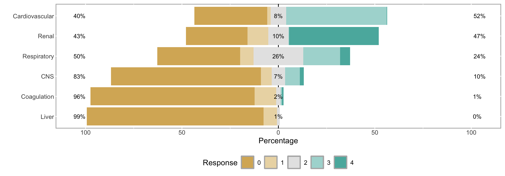

gt · gtsummary · sjPlot · table1 · likert · janitor · rio · here · pacman
2026-07-14
A one-hour tour of the R packages that take you from messy data to publication-ready tables and reports — demonstrated on a real, de-identified ICU dataset.
| Time | Topic |
|---|---|
| 2 min | Why these packages? |
| 2 min | The dataset: QCRC ICU cohort |
| 3 min | pacman::p_load() — loading packages |
| 3 min | here — project-relative file paths |
| 6 min | rio — import/export anything |
| 6 min | janitor::clean_names() — tidy names |
| 7 min | table1 — “Table 1” |
| 6 min | gt — grammar of tables |
| 8 min | gtsummary — summary & regression tables |
| 8 min | sjPlot — tab_model() & tab_xtab() |
| 6 min | likert — ordinal clinical scores |
| 3 min | Wrap-up & resources |
summary(), str()) is fast to write but ugly to sharehere, rio, janitor → find, load, and clean your datatable1 → describe your samplegt, gtsummary, sjPlot → build the tables people actually readlikert → visualize ordered/scale datapacman → glue that loads everything with one lineEvery example in this deck uses the same real, de-identified file: QCRC_FINAL_Deidentified.xlsx
Main_Dataset (demographics, treatments, outcomes), daily SOFA organ-failure scores, Long_Labs, Long_Vitals, ventilator settings, medications, and moreMain_Dataset: 37 variables including age, sex, race, BMI, intubation, CRRT/dialysis, and mortalitypacman::p_load()library()A typical analysis script starts like this:
If one of these isn’t installed, the whole script stops with an error — and you have to go install it manually, then re-run.
pacman::p_load()pacman is a package-management package. Its star function, p_load(), installs anything missing, then loads everything — in one line.
pacman::p_load()library()s) all of themhere: Project-Relative Pathssetwd()here::here()here::here().Rproj file, .git folder, or similar) and builds paths from therehere() call works identically whether you run it from RStudio, the terminal, or a rendered Quarto documentrio::import() — see next sectionrio: Import & Export Anythingrio wraps dozens of format-specific packages (haven, readxl, data.table, jsonlite, …) behind two simple verbs.
No more remembering read_csv() vs read.spss() vs read_excel() — and no hard-coded paths, thanks to here().
.csv, .xlsx, .sav, .dta, .sas7bdat, .json, .rds, .parquet, and moreimport_list() reads every sheet at once — perfect for this workbook, which has 10 sheets:janitor: Clean Names Fast [1] "Patient_DEID" "Decatur_Transfer"
[3] "Age" "Female"
[5] "Race" "Died"
[7] "30D_Mortality" "60D_Mortality"
[9] "Death date_deid" "ICU_LOS"
[11] "BMI" "Died in ICU"
[13] "Code status" "Epoprostenol"
[15] "Remdesivir_or_placebo" "Intubated"
[17] "ICU_ADMIT_DEID" "ICU_DC_DEID"
[19] "HOSPITAL_ADMIT_DEID" "HOSPITAL_DC_DEID"
[21] "Vent LOS" "CRRT"
[23] "CRRT days" "HD"
[25] "HD days" "Pressor >2 hours"
[27] "Pressor days" "Absolute lymphocyte"
[29] "WBC" "D dimer"
[31] "CRP" "Peak troponin"
[33] "P:F ratio at ICU admission" "P:F ratio at first intubation"
[35] "Calculated_Cstat" "First_Intubation_deid"
[37] "Last_Intubation_deid" Notice the inconsistency: Title Case With Spaces (Vent LOS, Peak troponin), ALL_CAPS_WITH_UNDERSCORES (ICU_ADMIT_DEID), and even a colon (P:F ratio at ICU admission). All are painful to type or reference in code.
clean_names()
Attaching package: 'janitor'The following objects are masked from 'package:stats':
chisq.test, fisher.test [1] "patient_deid" "decatur_transfer"
[3] "age" "female"
[5] "race" "died"
[7] "x30d_mortality" "x60d_mortality"
[9] "death_date_deid" "icu_los"
[11] "bmi" "died_in_icu"
[13] "code_status" "epoprostenol"
[15] "remdesivir_or_placebo" "intubated"
[17] "icu_admit_deid" "icu_dc_deid"
[19] "hospital_admit_deid" "hospital_dc_deid"
[21] "vent_los" "crrt"
[23] "crrt_days" "hd"
[25] "hd_days" "pressor_2_hours"
[27] "pressor_days" "absolute_lymphocyte"
[29] "wbc" "d_dimer"
[31] "crp" "peak_troponin"
[33] "p_f_ratio_at_icu_admission" "p_f_ratio_at_first_intubation"
[35] "calculated_cstat" "first_intubation_deid"
[37] "last_intubation_deid" clean_names()snake_case30D_... → x30d_...)import() — every variable name used for the rest of this lecture assumes this has already happened"." missing codeLike a lot of clinical exports, this dataset stores missing values as a literal "." string — which leaves numeric columns like bmi, wbc, and crp stuck as text.
Attaching package: 'dplyr'The following objects are masked from 'package:stats':
filter, lagThe following objects are masked from 'package:base':
intersect, setdiff, setequal, union"." missing codeNot a janitor function, but the natural next step after clean_names() — tidy the names, then tidy the values. This is the qcrc_clean object every later slide builds on.
table1: Describing Your SampleNearly every clinical paper starts with a baseline characteristics table split by outcome or treatment group — this is almost always called “Table 1.” Our cohort: 288 ICU patients, 98 of whom (34%) died.
Building it by hand means computing means, SDs, counts, percentages, and p-values separately for every variable.
table1()
Attaching package: 'table1'The following objects are masked from 'package:base':
units, units<-| Overall (N=288) |
|
|---|---|
| age | |
| Mean (SD) | 63.5 (15.5) |
| Median [Min, Max] | 65.0 [19.0, 89.0] |
| bmi | |
| Mean (SD) | 31.6 (8.34) |
| Median [Min, Max] | 30.3 [15.4, 64.8] |
| Missing | 3 (1.0%) |
| icu_los | |
| Mean (SD) | 10.5 (8.76) |
| Median [Min, Max] | 9.00 [0, 56.0] |
| intubated | |
| Mean (SD) | 0.736 (0.442) |
| Median [Min, Max] | 1.00 [0, 1.00] |
| crrt | |
| Mean (SD) | 0.229 (0.421) |
| Median [Min, Max] | 0 [0, 1.00] |
table1()gt for a polished, exportable version.table1() with strata| Female (N=131) |
Male (N=157) |
Overall (N=288) |
|
|---|---|---|---|
| age | |||
| Mean (SD) | 63.7 (17.3) | 63.3 (13.9) | 63.5 (15.5) |
| Median [Min, Max] | 65.0 [21.0, 89.0] | 65.0 [19.0, 89.0] | 65.0 [19.0, 89.0] |
| bmi | |||
| Mean (SD) | 32.5 (9.09) | 30.8 (7.60) | 31.6 (8.34) |
| Median [Min, Max] | 30.6 [16.4, 64.8] | 29.9 [15.4, 64.7] | 30.3 [15.4, 64.8] |
| Missing | 2 (1.5%) | 1 (0.6%) | 3 (1.0%) |
| icu_los | |||
| Mean (SD) | 9.88 (9.49) | 11.1 (8.10) | 10.5 (8.76) |
| Median [Min, Max] | 7.59 [0, 56.0] | 9.00 [0, 41.0] | 9.00 [0, 56.0] |
| intubated | |||
| Mean (SD) | 0.702 (0.459) | 0.764 (0.426) | 0.736 (0.442) |
| Median [Min, Max] | 1.00 [0, 1.00] | 1.00 [0, 1.00] | 1.00 [0, 1.00] |
| crrt | |||
| Mean (SD) | 0.145 (0.353) | 0.299 (0.459) | 0.229 (0.421) |
| Median [Min, Max] | 0 [0, 1.00] | 0 [0, 1.00] | 0 [0, 1.00] |
table1() with two strata
Female
|
Male
|
Overall
|
||||
|---|---|---|---|---|---|---|
| Survived (N=88) |
Died (N=43) |
Survived (N=102) |
Died (N=55) |
Survived (N=190) |
Died (N=98) |
|
| age | ||||||
| Mean (SD) | 60.9 (17.2) | 69.5 (16.1) | 59.2 (13.2) | 70.8 (12.0) | 60.0 (15.2) | 70.2 (13.9) |
| Median [Min, Max] | 60.5 [21.0, 89.0] | 70.0 [23.0, 89.0] | 61.0 [19.0, 89.0] | 71.0 [32.0, 89.0] | 61.0 [19.0, 89.0] | 71.0 [23.0, 89.0] |
| bmi | ||||||
| Mean (SD) | 34.2 (9.57) | 29.1 (6.96) | 32.4 (8.07) | 28.0 (5.75) | 33.2 (8.82) | 28.5 (6.30) |
| Median [Min, Max] | 31.6 [20.4, 64.8] | 29.3 [16.4, 50.3] | 31.2 [17.6, 64.7] | 27.0 [15.4, 40.0] | 31.4 [17.6, 64.8] | 28.5 [15.4, 50.3] |
| Missing | 2 (2.3%) | 0 (0%) | 1 (1.0%) | 0 (0%) | 3 (1.6%) | 0 (0%) |
| icu_los | ||||||
| Mean (SD) | 10.1 (10.3) | 9.45 (7.53) | 10.8 (7.73) | 11.5 (8.80) | 10.5 (9.02) | 10.6 (8.29) |
| Median [Min, Max] | 7.00 [0, 56.0] | 8.00 [0, 28.0] | 9.16 [0.435, 39.0] | 9.00 [0, 41.0] | 8.36 [0, 56.0] | 9.00 [0, 41.0] |
| intubated | ||||||
| Mean (SD) | 0.682 (0.468) | 0.744 (0.441) | 0.696 (0.462) | 0.891 (0.315) | 0.689 (0.464) | 0.827 (0.381) |
| Median [Min, Max] | 1.00 [0, 1.00] | 1.00 [0, 1.00] | 1.00 [0, 1.00] | 1.00 [0, 1.00] | 1.00 [0, 1.00] | 1.00 [0, 1.00] |
| crrt | ||||||
| Mean (SD) | 0.0909 (0.289) | 0.256 (0.441) | 0.167 (0.375) | 0.545 (0.503) | 0.132 (0.339) | 0.418 (0.496) |
| Median [Min, Max] | 0 [0, 1.00] | 0 [0, 1.00] | 0 [0, 1.00] | 1.00 [0, 1.00] | 0 [0, 1.00] | 0 [0, 1.00] |
gt: A Grammar of Tableslibrary(gt)
qcrc_clean |>
select(patient_deid, age, female, race, bmi, icu_los, died) |>
head(6) |>
gt() |>
tab_header(
title = "QCRC ICU Cohort",
subtitle = "First 6 patients"
) |>
fmt_number(columns = c(bmi, icu_los), decimals = 1) |>
cols_label(patient_deid = "Patient ID", icu_los = "ICU LOS (days)")| QCRC ICU Cohort | ||||||
|---|---|---|---|---|---|---|
| First 6 patients | ||||||
| Patient ID | age | female | race | bmi | ICU LOS (days) | died |
| 17205428 | 89 | Female | Caucasian or White | 26.2 | 11.1 | Died |
| 17234405 | 73 | Female | African American or Black | 40.7 | 25.0 | Survived |
| 17239956 | 53 | Male | Caucasian or White | 38.6 | 17.0 | Survived |
| 17350926 | 55 | Male | African American or Black | 35.2 | 21.0 | Died |
| 17377951 | 66 | Female | African American or Black | 32.9 | 11.2 | Died |
| 17397040 | 78 | Male | African American or Black | 28.7 | 6.0 | Died |
gt() turns a data frame into a table objectgt mattersgtsummary) build on top oftab_spanner() — group columns under a shared headertab_source_note() — add a footnote/citationgtsave(tbl, "table.png") — export to image, HTML, RTF, or Wordgtsummary: Summary & Regression Tablestbl_summary() — descriptive tableslibrary(gtsummary)
qcrc_clean |>
select(age, bmi, wbc, crp, died) |>
tbl_summary(
by = died,
statistic = list(all_continuous() ~ "{median} ({p25}, {p75})")
) |>
add_p() |>
add_overall()| Characteristic | Overall N = 2881 |
Survived N = 1901 |
Died N = 981 |
p-value2 |
|---|---|---|---|---|
| age | 65 (55, 75) | 61 (51, 69) | 71 (64, 79) | <0.001 |
| bmi | 30 (26, 35) | 31 (27, 37) | 29 (25, 31) | <0.001 |
| Unknown | 3 | 3 | 0 | |
| wbc | 8.6 (6.2, 11.7) | 8.5 (6.2, 10.7) | 9.5 (6.2, 12.7) | 0.2 |
| Unknown | 5 | 2 | 3 | |
| crp | 169 (111, 234) | 171 (109, 229) | 169 (113, 246) | 0.6 |
| Unknown | 31 | 14 | 17 | |
| 1 Median (Q1, Q3) | ||||
| 2 Wilcoxon rank sum test | ||||
tbl_summary() — descriptive tablestable1, but the output is already a polished gt table — ready to drop into a reportadd_p() adds group-comparison p-values; add_overall() adds a combined columntbl_regression() — model tablesmod <- glm(died ~ age + bmi + intubated + crrt,
data = qcrc_clean, family = binomial)
tbl_regression(mod, exponentiate = TRUE) |>
add_glance_source_note()| Characteristic | OR | 95% CI | p-value |
|---|---|---|---|
| age | 1.05 | 1.03, 1.07 | <0.001 |
| bmi | 0.92 | 0.87, 0.96 | <0.001 |
| intubated | 1.93 | 0.94, 4.10 | 0.078 |
| crrt | 6.57 | 3.28, 13.7 | <0.001 |
| Abbreviations: CI = Confidence Interval, OR = Odds Ratio | |||
| Null deviance = 367; Null df = 284; Log-likelihood = -142; AIC = 295; BIC = 313; Deviance = 285; Residual df = 280; No. Obs. = 285 | |||
tbl_regression() — model tableslm/glm/coxph/mixed model into a clean estimate table (odds ratio, CI, p-value) — exponentiate = TRUE reports odds ratios instead of log-oddsadd_glance_source_note() appends model fit stats (AIC, n)tbl_merge() and tbl_stack() combine multiple models/tables side by side or on top of each other — handy for multi-model comparisonssjPlot: Regression & Crosstab Tablestab_model() — regression output| Died (ICU, 0/1) | |||
| Predictors | Odds Ratios | CI | p |
| (Intercept) | 0.11 | 0.00 – Inf | 0.070 |
| age | 1.05 | 0.00 – Inf | <0.001 |
| bmi | 0.92 | 0.00 – Inf | <0.001 |
| intubated | 1.93 | 0.00 – Inf | 0.078 |
| crrt | 6.57 | 0.00 – Inf | <0.001 |
| Observations | 285 | ||
| R2 Tjur | 0.263 | ||
tab_model() — regression outputtransform = "exp") since this is a logistic modellm, glm, lmer, coxph, and moretab_xtab() — cross-tabulationstab_xtab(
var.row = qcrc_clean$race,
var.col = qcrc_clean$died,
show.row.prc = TRUE,
show.summary = TRUE
)| race | died | Total | |
|---|---|---|---|
| Survived | Died | ||
| African American or Black |
130 65.7 % |
68 34.3 % |
198 100 % |
| Asian | 4 44.4 % |
5 55.6 % |
9 100 % |
| Caucasian or White | 38 70.4 % |
16 29.6 % |
54 100 % |
| Multiple | 0 0 % |
1 100 % |
1 100 % |
| Unknown, Unavailable or Unreported |
18 69.2 % |
8 30.8 % |
26 100 % |
| Total | 190 66 % |
98 34 % |
288 100 % |
| χ2=4.394 · df=4 · Cramer's V=0.124 · Fisher's p=0.354 | |||
show.row.prc / show.col.prc add row/column percentagesshow.summary appends the chi-square test statistic and p-valuetab_model()likert: Ordinal / Scale DataThe likert package is built for survey agreement scales, but it works for any ordered categorical variable measured on a shared scale. The SOFA sheet has six organ-system subscores, each rated 0 (normal) to 4 (severe failure) — structurally identical to a 5-point Likert item.
sofa <- import(
here("data", "QCRC_FINAL_Deidentified.xlsx"),
sheet = "SOFA"
) |>
clean_names()
lvls <- as.character(0:4)
sofa_items <- sofa |>
transmute(
Coagulation = factor(coag, levels = lvls),
Liver = factor(liver, levels = lvls),
CNS = factor(cns, levels = lvls),
Renal = factor(renal, levels = lvls),
Cardiovascular = factor(cvs, levels = lvls),
Respiratory = factor(resp, levels = lvls)
)likert() + plot()Loading required package: ggplot2
Attaching package: 'ggplot2'The following object is masked from 'package:sjPlot':
set_themeLoading required package: xtable
Attaching package: 'xtable'The following objects are masked from 'package:table1':
label, label<-Registered S3 method overwritten by 'plyr':
method from
[.indexed table1
Attaching package: 'likert'The following object is masked from 'package:dplyr':
recode Item low neutral high mean sd
5 Cardiovascular 39.58333 7.986111 52.430556 2.753472 1.4185144
4 Renal 42.70833 10.416667 46.875000 3.187500 1.7961195
6 Respiratory 50.00000 25.694444 24.305556 2.364583 1.3391957
3 CNS 83.33333 6.944444 9.722222 1.506944 1.0492840
1 Coagulation 96.18056 2.430556 1.388889 1.208333 0.5828561
2 Liver 98.61111 1.388889 0.000000 1.097222 0.3405150Warning: The `size` argument of `element_rect()` is deprecated as of ggplot2 3.4.0.
ℹ Please use the `linewidth` argument instead.
ℹ The deprecated feature was likely used in the likert package.
Please report the issue at <https://github.com/jbryer/likert/issues>.
summary() gives the % of patients per score, per organ system; plot() produces the classic diverging stacked bar chart| Package | Best for |
|---|---|
pacman |
Loading/installing packages in one line |
here |
Project-relative file paths, no more setwd() |
rio |
Reading/writing any data file format |
janitor |
Cleaning column names & quick data checks |
table1 |
Descriptive “Table 1” split by group |
gt |
Full control over any custom table’s look |
gtsummary |
Fast, statistically-aware summary & model tables |
sjPlot |
Regression tables (tab_model) and crosstabs (tab_xtab) |
likert |
Visualizing ordered survey/scale data |
pacman::p_load(here, rio, janitor, table1, gt, gtsummary, sjPlot, likert)
qcrc <- import(here("data", "QCRC_FINAL_Deidentified.xlsx"),
sheet = "Main_Dataset") |>
clean_names()
table1(~age+bmi+female+icu_los+intubated+crrt|died, data=qcrc_clean)
qcrc |>
tbl_summary(by = died)
mod <- glm(died ~ age + intubated + crrt,
data = qcrc, family = binomial)
tab_model(mod)Six packages, six lines, from a raw ICU spreadsheet to publication-ready output.
here: https://here.r-lib.orgrio: https://gesistsa.github.io/riojanitor: https://sfirke.github.io/janitortable1: CRAN vignette — vignette("introduction", package = "table1")gt: https://gt.rstudio.comgtsummary: https://www.danieldsjoberg.com/gtsummarysjPlot: https://strengejacke.github.io/sjPlotlikert: CRAN vignette — vignette("likert", package = "likert")pacman: https://github.com/trinker/pacman